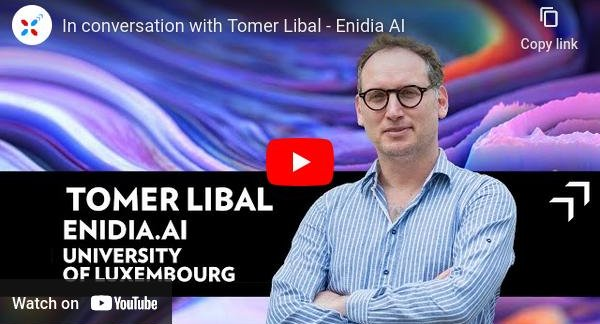
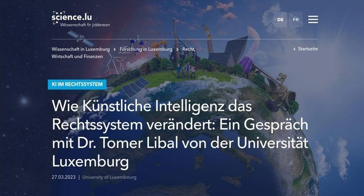
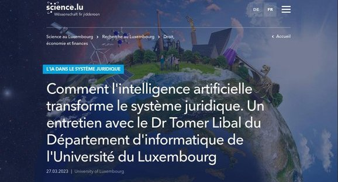
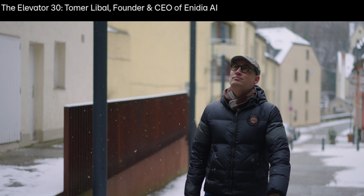

October 6, 2023
In conversation with our sciencepreneurs: Tomer Libal, ENIDIA.AI
Our CEO discusses ethical AI with Research Luxembourg.
Go to item →Media
Where Enidia and its founder have been covered.

October 6, 2023
Our CEO discusses ethical AI with Research Luxembourg.
Go to item →
March 27, 2023
Our CEO is interviewed by Reinhart Brünig for Science.lu (German edition).
Go to item →
March 27, 2023
Our CEO is interviewed by Reinhart Brünig for Science.lu (French edition).
Go to item →
February 8, 2024
Our CEO is interviewed by Britta Schlüter for Science.lu.
Go to item →
February 22, 2024
Our CEO is pitching Enidia AI in an RTL "The Elevator" episode.
Go to item →
April 11, 2024
Our CEO is interviewed by Melanie Ptok from the Wort regarding the use of symbolic AI for an article on Autonomous Cars
Go to item →